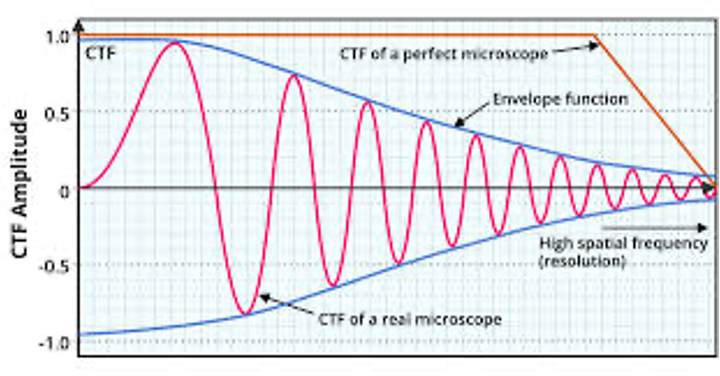

X-ray crystallography
Resolution is calculated from diffraction geometry using Bragg's law. Higher-angle diffraction corresponds to smaller resolvable spacings.
![[1] PDF p94 cover](../../cryo-slides-img/cryo-em-compare.png)

CTF describes how phase contrast is transferred across spatial frequency.
Aberrations and the envelope damp high-frequency information.
Its oscillations appear as Thon rings in the power spectrum.



Resolution is calculated from diffraction geometry using Bragg's law. Higher-angle diffraction corresponds to smaller resolvable spacings.
Resolution is estimated from Fourier Shell Correlation between independently refined half-maps. The 0.143 threshold is commonly used.